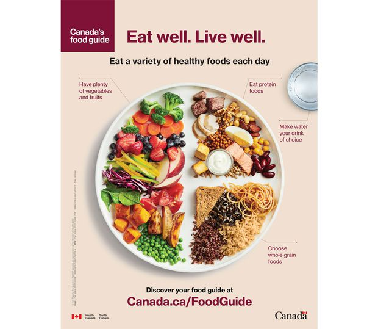
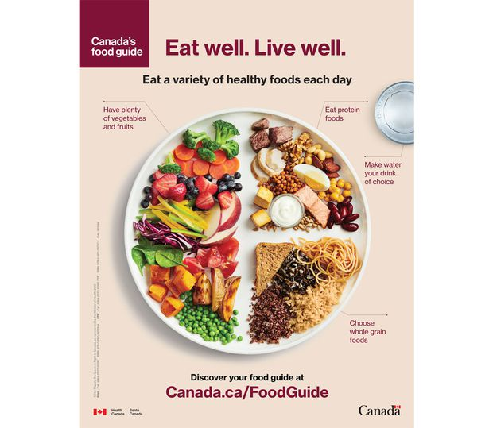

Food source
Food source
Most food has its origin in plants. Some food is obtained directly from plants; but even animals that are used as food sources are raised by feeding them food derived from plants. Cereal grain is a staple food that provides more food energy worldwide than any other type of crop.[9] Corn (maize), wheat, and rice – in all of their varieties – account for 87% of all grain production worldwide.[10][11][12] Most of the grain that is produced worldwide is fed to livestock. Some foods not from animal or plant sources include various edible fungi, especially mushrooms. Fungi and ambient bacteria are used in the preparation of fermented and pickled foods like leavened bread, alcoholic drinks, cheese, pickles, kombucha, and yogurt. Another example is blue-green algae such as Spirulina.[13] Inorganic substances such as salt, baking soda and cream of tartar are used to preserve or chemically alter an ingredient.
Animals are used as food either directly or indirectly by the products they produce. Meat is an example of a direct product taken from an animal, which comes from muscle systems or from organs (offal). Food products produced by animals include milk produced by mammary glands, which in many cultures is drunk or processed into dairy products (cheese, butter, etc.). In addition, birds and other animals lay eggs, which are often eaten, and bees produce honey, a reduced nectar from flowers, which is a popular sweetener in many cultures. Some cultures consume blood, sometimes in the form of blood sausage, as a thickener for sauces, or in a cured, salted form for times of food scarcity, and others use blood in stews such as jugged hare.[20] Some cultures and people do not consume meat or animal food products for cultural, dietary, health, ethical, or ideological reasons. Vegetarians choose to forgo food from animal sources to varying degrees. Vegans do not consume any foods that are or contain ingredients from an animal source.
pageTop